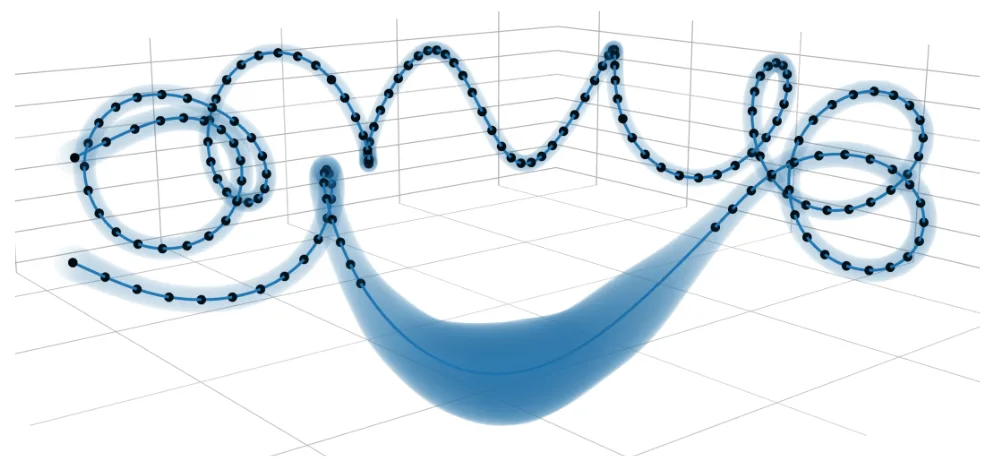
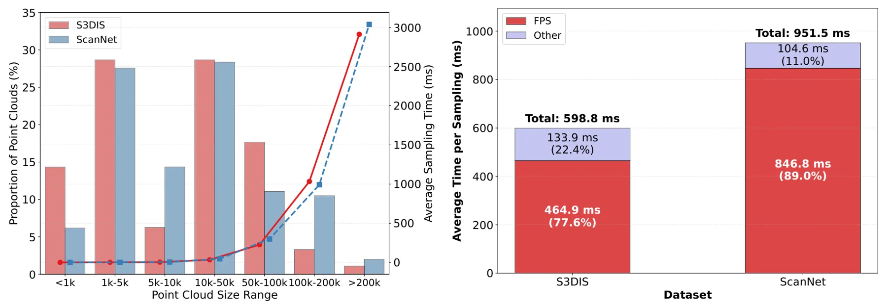
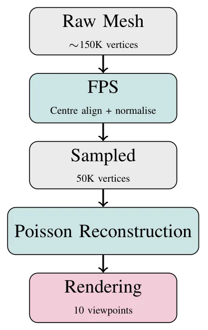
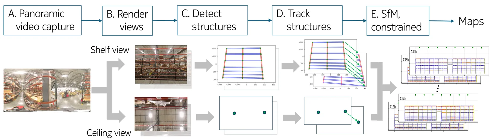
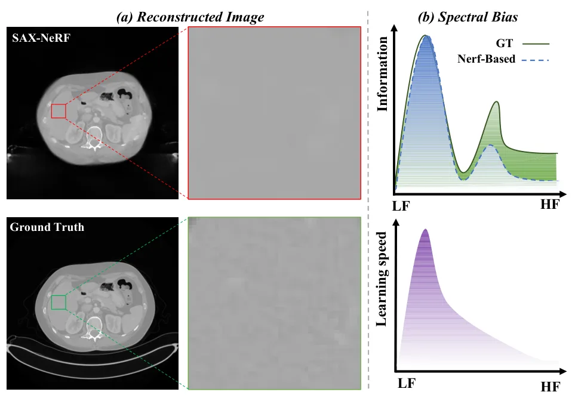
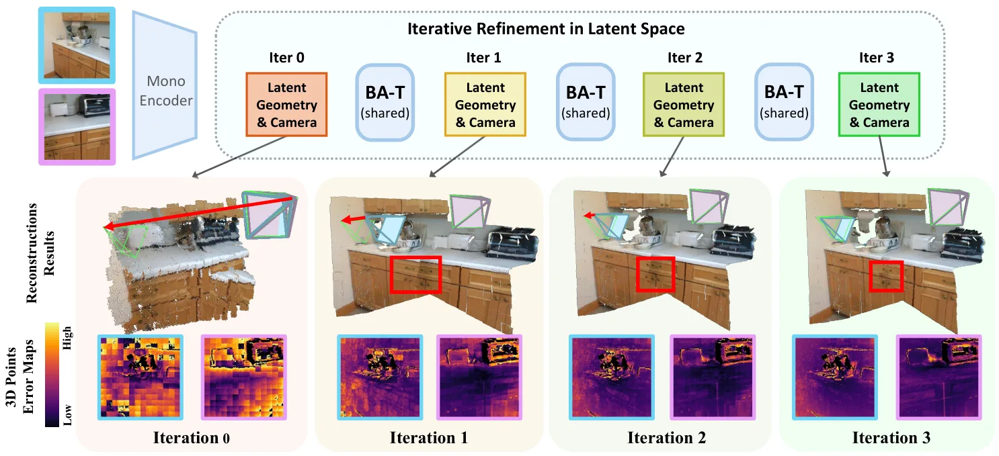
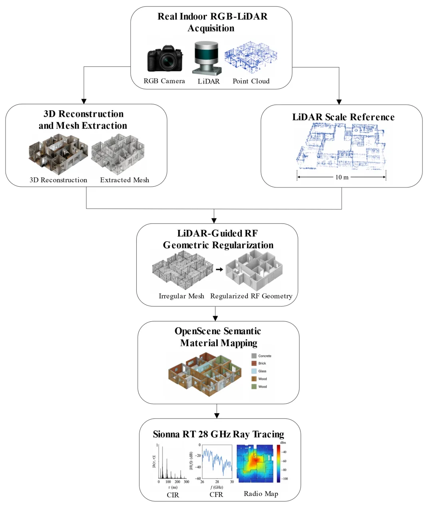
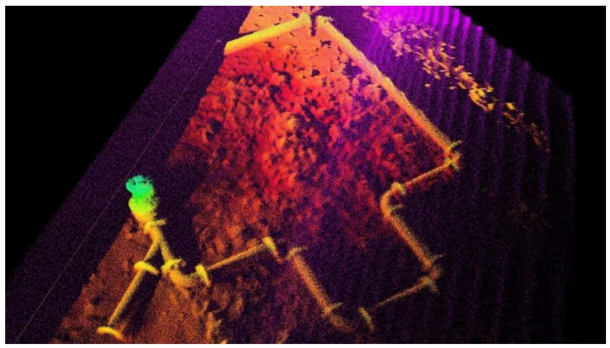

新论文 · 日期 2026-06-04 · score 9 · cs.RO
作者：Mason Peterson, Qingyuan Li, Yixuan Jia, Fernando Cladera
评分 8.4/10
GNSS-denied跨视角定位RGB-DPose Graph语义几何
一句话工作总结：通过航空图与地面 RGB-D 语义几何 primitive 匹配，为 GNSS-denied SLAM 提供全局重定位和漂移约束。
Meridian 用高层 metric-semantic primitives 匹配航空影像和地面机器人 RGB-D 子图，在无需针对目标区域训练或调参的情况下实现全局定位。方法构造一致性指标来估计子图位姿分布，并在鲁棒 pose graph optimization 中剔除外点，最终在自动驾驶、园区和野外环境共 19 km 轨迹上取得平均 2.4 m 的优化轨迹误差。
Successful robot automation requires accurate global localization to support repeatability, task planning, goal specification, and safe operation. However, reliable localization in GNSS-denied environments rem…

新论文 · 日期 2026-06-04 · score 9 · cs.RO
作者：Davide Ceriola, Simone Ferrari, Luca Di Giammarino, Leonardo Brizi
评分 8.7/10
连续时间SLAMGBPGaussian Process分布式优化多传感器融合
一句话工作总结：用 GBP 和 GP 运动先验构建可分布式的连续时间 SLAM 求解器，面向异步多传感器轨迹估计。
论文提出 G-solver，将 Gaussian Belief Propagation 与 Gaussian Process 运动先验结合，用全 Gaussian 表示进行连续时间轨迹估计。该框架能处理滚动快门相机、LiDAR、雷达和事件相机等异步传感器流，并自然扩展到分布式多相机优化，在合成和真实数据上展示了稳定精度与接近现有连续时间方法的运行效率。
Continuous-time SLAM provides a principled framework for fusing heterogeneous sensors while estimating smooth trajectories, and is particularly well-suited for handling heterogeneous, asynchronous sensor strea…

新论文 · 日期 2026-06-04 · score 8 · cs.RO, cs.CV, cs.DC
作者：Ziyang Yu, Xiang Li, Qiong Chang, Jun Miyazaki
评分 7.5/10
点云LiDAR SLAM下采样GPU加速FPS
一句话工作总结：用球形体素剪枝和 GPU kernel 融合加速点云 FPS 下采样，降低 LiDAR/点云前端延迟。
RadiusFPS 面向点云下采样中的 FPS 延迟瓶颈，利用球形体素建立保守几何界来剪枝每轮冗余距离计算，并加入坐标级 point-skip 测试进一步减少更新。其 GPU 版本 RadiusFPS-G 将体素选择、剪枝和距离更新融合到 warp-level memory-coalesced kernels 中，在 S3DIS、ScanNet 和 SemanticKITTI 上达到最高约 2.5 倍 GPU FP…
Point clouds are a primary sensory representation for robotic perception, underpinning LiDAR-based autonomous driving, simultaneous localization and mapping (SLAM), and navigation. Within these pipelines, Fart…

新论文 · 日期 2026-06-04 · score 8 · cs.CV, cs.AI
作者：Jihun Cho, Soo-Yeon Jeong, Eun-Jeong Bae, Sun-Young Ihm
评分 4.2/10
三维重建多视图医学影像点云预测
一句话工作总结：用多视角 2D 口内照片和注意力融合预测口腔三维点模型。
该工作使用十张不同角度的 2D 口内图像重建三维口腔模型，以降低传统取模和口内扫描仪的成本与不适。模型在 Dental3DS 数据集上训练，采用 MobileNetV2 图像编码器和 Multi-head Attention 进行多视图特征融合，报告最近邻阈值匹配准确率为 77.49%，但预测点存在向高密度真值区域聚集的问题。
Oral 3D modelling is one of the most essential stages in dentistry, and many different approaches, such as impression taking and intraoral scanning, are commonly used for this phase, each with notable limitati…

新论文 · 日期 2026-06-01 · score 8 · cs.CV
作者：Howard Huang, Bharath Surianarayanan, Keifer Lee, Chenyu Wang
评分 7.4/10
视觉建图结构约束SfM全景视频工业地图线框重建
一句话工作总结：利用语义结构点和 Manhattan 约束，从全景视频构建大规模工业环境线框地图。
SAVMap 使用单个全景视频相机为仓库货架和灯具结构生成语义线框地图。方法从全景视频中抽取货架和天花板视角图像，用语义分割提取结构特征点并跨帧跟踪，再通过考虑 Manhattan grid 等真实几何关系的约束 SfM 生成 3D 线框点。论文在 46 排货架的大仓库中从约一小时视频生成 5000 多个 shelf elements，平均绝对误差 4.8 cm。
Precise 3D representations of industrial environments enable tasks such as robot localization and digital twin generation. We propose SAVMap, a method for generating a semantic wireframe map of warehouse shelf…

新论文 · 日期 2026-06-04 · score 7 · cs.CV
作者：Genyuan Zhang, Junyao Wang, Haoran Lan, Chuandong Tan
评分 4.8/10
隐式神经表示CBCT三维重建自监督高频纹理
一句话工作总结：结合神经场外推和物理迭代细化来抑制 CBCT 截断伪影并保留高频纹理。
论文针对 CBCT 截断导致的严重伪影和视野受限，提出自监督三维重建框架：先用神经场直接从空间坐标映射到放射密度并接受投影监督，实现连续三维外推和环状伪影抑制；再加入物理迭代 refinement，从原始投影逐步重新注入高频纹理，以缓解坐标网络的频谱偏置。
Cone-beam computed tomography (CBCT) frequently suffers from data truncation, which introduces severe artifacts and limits the effective field of view (FOV). Existing deep learning methods for truncated cone-b…

新论文 · 日期 2026-06-02 · score 7 · cs.CV
作者：Ganlin Zhang, Weirong Chen, Daniel Cremers, Xi Wang
评分 8.1/10
Bundle AdjustmentTransformer两视图重建SfM几何优化
一句话工作总结：把 BA 的迭代残差 refinement 机制嵌入轻量 Transformer，用于两视图位姿和重建优化。
BA-T 从经典 bundle adjustment 中 pose 与局部几何反复传播信息的机制出发，将 BA 风格结构化更新写成可重复的轻量 Transformer 层，在隐式 token 空间中基于 latent residual 逐步细化位姿和重建。实验显示其迭代过程能提升 pose 与 reconstruction accuracy，并以较少 decoder 参数达到或超过更大模型。
Feed-forward models for 3D reconstruction have achieved strong performance using deep cross-view attention to exchange information across images. However, these approaches often depend on heavy decoder stacks…

新论文 · 日期 2026-06-03 · score 5 · eess.IV, cs.MM
作者：Chentian Sun
评分 7.2/10
多视角重建点云融合外参标定实时系统空间哈希
一句话工作总结：通过解耦外参细化和置信度引导融合，实现可扩展的实时多视角点云重建。
FUSE-Flow 面向实时多相机三维重建，将外参标定和点云融合解耦为 GMAC 与 FUSE 两个模块。GMAC 通过几何约束和多视角重建 transformer 细化相机外参，FUSE 使用置信度加权和 adaptive spatial hashing 完成无状态线性复杂度融合；二者互相促进，提高稀疏视角标定、动态稳定性和系统可扩展性。
Real-time multi-camera 3D reconstruction is a key foundation for immersive media, remote interaction and spatial computing. While synchronized camera arrays are widely adopted, achieving geometrically consiste…

新论文 · 日期 2026-05-31 · score 4 · eess.IV
作者：Chengyang Yao, Cunhua Pan, Jiaming Zeng, Yuquan Sun
评分 6.7/10
数字孪生RGB-LiDARCOLMAP3DGSRay Tracing
一句话工作总结：将 RGB-LiDAR、COLMAP、3DGS/SuGaR 和语义材料绑定串成室内 RF 数字孪生建模流程。
RFDT-Channel 面向室内毫米波 ray-tracing 仿真中的场景建模效率和材料绑定问题，使用 Jetson Orin 平台采集 RGB 视频与 LiDAR 点云，通过 COLMAP、3D Gaussian Splatting 和 SuGaR 生成初始三角网格，再用 LiDAR 提供几何与尺度参考，在 Blender 中进行 RF-oriented 规则化和拓扑修复，最后用 OpenScene 分割绑定…
Real-scene indoor millimeter-wave simulation requires efficient modeling of radio frequency (RF)-computable geometry and electromagnetic material properties. To address the low efficiency of manual scene model…

新论文 · 日期 2026-06-04 · score 3 · cs.RO
作者：Youssef Attia, Davide Costa, Francesco Wanderlingh, Filippo Campagnaro
评分 6.8/10
水下SLAM声呐仿真Isaac SimDVLFastLIO2
一句话工作总结：在 Isaac Sim 中构建更真实的 3D 声呐仿真，并用 FastLIO2 管线验证水下多传感器 SLAM。
论文提出用于真实 3D 声呐仿真的模块化架构，在 NVIDIA Isaac Sim 中实现类似 Water Linked 3D-15 的体积声呐模型，并将其接入水下仿真框架。系统通过硬件在环方式验证：在 Jetson Orin Nano 上运行改造 FastLIO2 SLAM pipeline，融合合成 3D 声呐、DVL、IMU 和压力数据，并与港口 sheet-pile 检测真实数据做定性对比。
As underwater robotics research increasingly addresses complex 3D perception and autonomous navigation, the fidelity of sonar simulation has become a key factor in algorithm development. Current simulation fra…